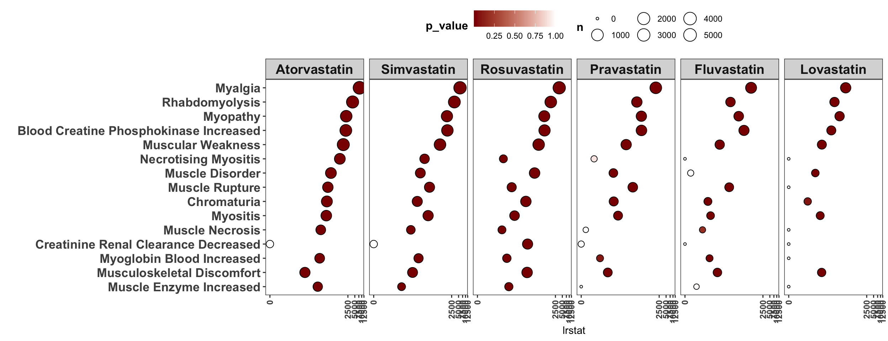
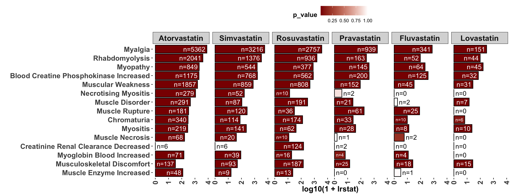
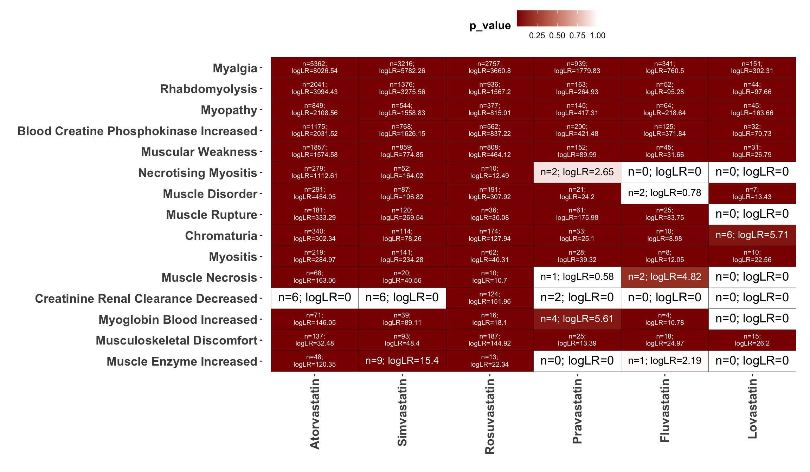
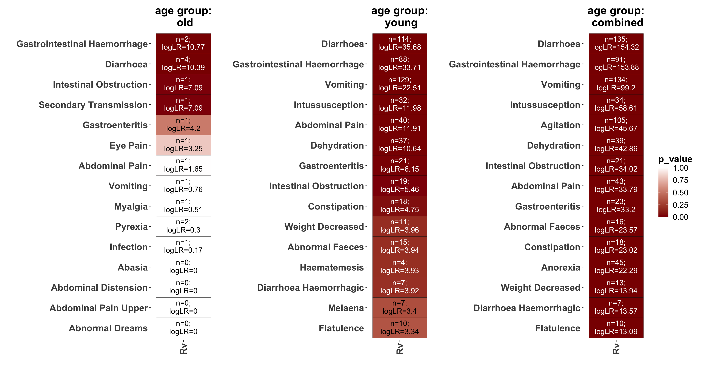

Medical product safety continues to be a key concern of the twenty-first century. Several spontaneous adverse events reporting databases established across the world continuously collect and archive adverse events data on various medical products. Determining signals of disproportional reporting (SDR) of product/adverse event pairs from these large-scale databases require the use of principled statistical techniques. Likelihood ratio test (LRT)-based approaches are particularly noteworthy in this context as they permit objective SDR detection without requiring ad hoc thresholds. However, their implementation is non-trivial due to analytical complexities, which necessitate the use of computation-heavy methods. Here we introduce R package pvLRT which implements a suite of LRT approaches, along with various post-processing and graphical summary functions, to facilitate simplified use of the methodologies. Detailed examples are provided to illustrate the package through analyses of three real product safety datasets obtained from publicly available FDA FAERS and VAERS databases.
Adverse events of medical products are a major concern worldwide, with serious global health implications particularly in the post-pandemic world. While clinical trials conducted pre-licensure remain the primary source of safety information about medical products, and other data sources such as claims and electronic health records are increasingly being used post-licensure, they exhibit several limitations. First, detecting extremely rare adverse events in clinical trials is difficult due to their strict inclusion/exclusion criteria and their relatively small counts compared to the population which will eventually receive the product. Second, randomized clinical trials for detecting multiple adverse events may be logistically and ethically infeasible. Despite having known issues such as self-selection, confounding, and missing data, etc., large-scale observational studies have been used in surveillance and post-licensure epidemiological studies to supplement traditional clinical trial-based approaches (Markatou and Ball 2014). Thanks to the proliferation of electronic health record systems worldwide, a vast trove of such data are now available and can collectively provide critical first alerts for emerging medical product safety concerns. Curated large-scale databases such as US Food and Drug Administration (FDA)’s Adverse Event Reporting System (FAERS) and Vaccine Adverse Event Reporting System (VAERS), the European Medicines Agency’s Eudravigilance, and the World Health Organization’s VigiBase provide collective lists of drugs/vaccines and adverse events from large number of reports, and thus are invaluable resources for product safety assessment.
Mining these databases to assess medical product safety is however challenging due to limitations of the data (e.g., biases in reporting, presence of duplicate reports, and missing/incomplete information) and the lack of a universally accepted statistical methodology. Several approaches to detecting signals of disproportionate reporting (SDR) as an indicator of a possible safety concern from adverse event data exist; these constitute a part of the pharmacovigilance process for assessing whether a medical product is the cause of an adverse event. Of the existing approaches, Proportional Relative Reporting Proportion (PRR), Reporting Odds Ratio (ROR), Multi-item Gamma Poisson Shrinker (MGPS), Bayesian Confidence Propagation Neural Network (BCPNN) and their false discovery rate (FDR)-adjusted variants are notable. Many of these approaches require one or both types of thresholding: (a) on the number of reports needed for the method to operate, and (b) on the underlying statistic to identify important/severe adverse events. However, determining appropriate thresholds remains a key challenge for these approaches, and in practice ad hoc thresholds are often used. This is problematic because both too low and too high thresholds lead to drastically different detection rates, and no separate measure is usually available to assess correctness of the detected signals. A principled approach permitting data-driven threshold determination with optimal guarantees on the detected signals is therefore essential to ensure statistical validity of results.
The LRT-based approaches to signal detection in the medical product safety datasets (Huang et al. 2011, 2017; Zhao et al. 2018; Ding et al. 2020; Chakraborty et al. 2022) provide a highly rigorous suite of statistical methods to address these problems. To provide a high-level summary, these methods assume a Poisson/zero-inflated Poisson model to parametrize associations between drugs and their adverse events. Then conditional on the total reported number of cases for each adverse event and each medical product, these methods quantify signal strength in the observed number of reports per adverse event/medical product pair through a (likelihood ratio) test statistic. Finally, significance of the pair is determined by comparing the observed test statistic to its null (independence) sampling distribution. There are several key advantages of these formal hypothesis test-based approaches which make them ideal for practical use. First, they aid coherent frequetist sampling distribution-based quantification of signal strengths, ensuring strong statistical and probabilistic rigor of the results. Second, they do not require the use of ad hoc thresholds for the observed report counts; instead, they quantify significance through probabilistic measures of uncertainty, e.g., \(p\)-values. This ensures that the identified signals are valid up to a pre-specified level of tolerance (usually 0.05). Third, because they are based on the highly formal likelihood ratio test theory for null hypothesis significance testing, they can rigorously control the type I error and the false discovery rate, while ensuring high power and sensitivity for signal detection. Moreover, by appropriately defining a maximum likelihood ratio test statistic, the method achieves automated FDR adjustment without requiring any separate \(p\)-value adjustment step.
| Package | Method | Notes |
|---|---|---|
| PhViD: Pharmacovigilance Signal Detection | PRR, ROR, BCPNN, GPS | Aimed towards drug safety. |
| openEBGM: EBGM Disproportionality Scores for Adverse Event Data Mining | MGPS | Aimed towards drug safety. |
| sglr: An R package for power and boundary calculations in pre-licensure vaccine trials using a sequential generalized likelihood ratio test | Sequential Generalized Likelihood Ratio decision boundaries | Aimed towards sequential testing-based vaccine safety assessments as used by the FDA. |
| Sequential: Exact sequential analysis for Binomial and Poisson data | Max SPRT statistic | Aimed towards sequential testing-based vaccine safety assessments as used by the FDA. |
| AEenrich: Vaccine adverse event enrichment tests |
|
Aimed towards sequential testing-based vaccine safety assessments as used by the FDA. |
| mds: Medical Devices Surveillance | Data preprocessing | Provides functions for handling messy/unstructured medical devices data. |
| pvLRT: A suite of likelihood ratio test based methods to use in pharmacovigilance | (Pseudo) LRT approaches based on log-linear models | Our package. |
There currently exist a few R packages in CRAN with functionalities relevant for medical product safety. This includes the packages PhViD (Ahmed and Poncet 2016), openEBGM (Canida and Ihrie 2017), AEenrich (Li et al. 2021), Sequential (Silva and Kulldorff 2021), SPRT sglr (Narasimhan and Shih 2012), and mds (Chung 2020). Among these PhViD and openEBGM provide functionalities for spontaneous adverse event data-driven pharmacovigilance: PhViD implements methods such as PRR, ROR, and BCPNN, and openEBGM implements the method of MGPS. By contrast, the other packages provide sequential testing-based approaches to vaccine safety. Table 1 lists these packages and their functionalities together with some high-level notes on their targeted uses. We note however that none of these packages implement LRT-based approaches to drug safety based on spontaneous adverse event data as considered in pvLRT. Indeed the development of pvLRT was motivated by the lack of easily accessible and comprehensive open source computational solutions to the LRT-based pharmacovigilance approaches. An important common ingredient of these LRT-based methods is a computation-intensive Monte Carlo simulation step required to facilitate (exact/non-asymptotic) inference from the analytically intractable null sampling distributions of the relevant test statistics. However, this requirement precludes immediate applications of the methods by pharmacovigilance practitioners in the absence of easily accessible software implementations. This is particularly relevant for zero-inflation based models where, in addition to the computation-heavy Monte Carlo step additional numerical optimization steps are necessary for the estimation of the zero-inflation parameter. We have developed pvLRT (Chakraborty and Markatou 2022) to cater to these needs while ensuring proper statistical rigor in the implementations.
The following are the major contributions of the pvLRT package. First, the package serves as a comprehensive software implementation of several LRT-based methods proposed over the past decade, including some recently developed methods. Both Poisson and Zero-inflated Poisson (ZIP) based models are implemented, and tests of both single and multiple simultaneous drugs (or medical products) are provided. Formal model comparison methods, such as Akaike Information Criterion (AIC) and Bayesian Information Criterion (BIC), can be used on the model fits to aid data-driven selection of Poisson vs. ZIP models on individual datasets. Second, three visual summary plots for the test results , namely bubble plot, barplot, and heatmap, are provided for immediate visualization. These plots provide information on sample size and test statistic and p-values for all AE/drug pairs tested, and hence permit quick exploration of signals in a (possibly large) dataset. These visualizations use ggplot2 (Wickham 2016) as the plotting engine, and hence its attributes (color, text size, etc.) can be easily modified post hoc by changing some of the ggplot2 graphical sttributes. In addition, leveraging the modern R ecosystem, the resultant plots can be easily made interactive via additional functions from other packages, such as ggplotly() from the package plotly (Sievert 2020). Third, aside from implementations of likelihood ratio tests, simple functions for random contingency table data generation from the Poisson and zero-inflated Poisson models are provided. This is particularly helpful in simulation experiments where different statistical methods for pharmacovigilance are compared. Finally, we have included processed contingency tables of AE/drug reports for two specific drug groups, viz. statins and Gadolinium-based Contrast Agents (GBCA; Zhao et al. (2018)), raw AE/drug incidence data, and a vaccine/AE dataset on rotavirus vaccines as R datasets. The drug data were obtained from the publicly available FDA FAERS database for the quarters 2014 Q1 – 2020 Q3 (for the processed contingency tables) and 2022 Q3 (raw incidence data), and the vaccine data were obtained from the FDA VAERS database for the year 1999; the package provides a convenient approach to accessing these processed data, particularly beneficial in methodological studies.
We note here that pvLRT is primarily an analysis package providing functions implementing statistical methodologies and subsequent post-processing and visualizations of results. The input data for the main analysis functions in pvLRT are always assumed to be pre-processed contingency tables (matrix-like objects) enumerating adverse event report counts with AEs along the rows and Drugs (or other medical products) along the columns. The package provides a convenience function to convert raw AE/drug incidence data (e.g., those downloaded from the FDA FAERS database) into analysis-ready processed contingency tables; however, no other functions for input raw data exploration and pre-processing, e.g. for filtering specific AEs or Drugs of interest or grouping specific AEs or drugs together are provided. We have deliberately made this design choice to (a) make the scope of the package well-defined, and (b) encourage the user to explore the raw adverse event data well before analyzing them. The modern R ecosystem contains several excellent general-purpose packages/package-collections, including data.table (Dowle and Srinivasan 2021) and tidyverse (Wickham et al. 2019) that provide a suite of principled and easy to use data pre-processing, munging, and visualization functions. We highly recommend leveraging these packages/functions to understand and preprocess the data well, before likelihood ratio tests are performed using pvLRT.
The purpose of the current article is to provide a high-level overview of the pvLRT package with detailed notes on its use, and guided examples with real world adverse event data exemplifying the use of LRT-based methodologies for pharmacovigilance. We note however that this article is not meant to serve as a comprehensive manual for pvLRT; all functions/objects provided in pvLRT come with detailed documentation, and this documentation serves as the definitive resource for pvLRT. It is also important to note that the LRT-based disproportionality analysis exemplified herein is only one part of the collective medical product/adverse event relationship assessment process. Current pharmacovigilance practice for medical product safety assessment includes review of summary statistics, disproportionality scores, cases summaries, and other sources of information about the medical products and the adverse events. The remainder of the article is organized as follows. We begin with a brief review of the LRT-based approaches to pharmacovigilance implemented in pvLRT. We then exemplify pvLRT by analyzing three sets of real pharmacovigilance datasets, two concerning drug safety and one concerning vaccine safety. We conclude the article with a brief discussion and some potential future directions.
This section reviews the underlying theories behind the likelihood ratio test (LRT)-based methods for drug safety assessment. We begin by fixing our notation. Consider a drug safety database cataloging \(I\) AEs detected among \(J\) medical products. Hereinafter we describe the methodologies in terms of ‘drugs’ as the medical products of concern; however, the methodologies trivially extend to other medical products including vaccines and medical devices. Let \(n_{ij}\) denote the number of reported cases for the \(i\)-th AE in the \(j\)-th drug. For the \(I \times J\) contingency table \((n_{ij})\), let \(n_{i\bullet} = \sum_{j=1}^{J} n_{ij}\) and \(n_{\bullet j} = \sum_{i=1}^{I} n_{ij}\) denote the \(i\)-th row total and \(j\)-th column total respectively, \(i = 1, \dots, I\); \(j = 1, \dots, J\); and let \(n_{\bullet \bullet}\) denote the grand total. Interest lies in determining whether the observed report count \(n_{ij}\) for \((i, j)\)-th AE/drug pair is substantially larger than what is expected had there been no association between the \(i\)-th AE and the \(j\)-th drug. Within the null hypothesis significance testing framework this is achieved by testing a hypothesis of absence of a ``signal” against that of its presence at the corresponding AE/drug pair. We formally define these hypotheses and the underlying parametric models below.
A Poisson log-linear model for LRT-based SDR detection has been proposed in the literature to parametrize AE/drug associations based on the observed report counts \(\{n_{ij}\}\). At the outset we note that these AE/drug associations can also be studied through a series of logistic regression models each with binary occurrences of each individual AE as the response and the presence/absence of various drugs (or other medical products) as predictors. When a Poisson model is assumed for the report counts \(\{n_{ij}\}\), the resulting log-linear model and the collective logistic regression models lead to identical maximum likelihood-based inferences (Agresti 2013). However, the log linear model is more flexible than the logistic models in that, by relaxing the underlying Poisson assumption for the report counts, it can handle a richer set of data. Two different parametrizations, namely the reporting proportion (Huang et al. 2011) and the relative reporting proportion (Dumouchel 1999), have been considered within the log-linear modeling framework for pharmacovigilance. These parametrizations differ by how they define and handle “signals”. In the reporting proportion parametrization a signal is determined at a specific AE for a given drug if its reporting proportion is substantially larger than the overall reporting proportions of all other AEs combined. In contrast, in the relative reporting proportion parametrization one focuses on the relative reporting proportion of a specific AE for a given drug and tests whether it is substantially larger than 1. The latter parametrization does not require consideration of the category of “all other AEs combined” explicitly in each comparison, and hence has a simpler interpretation. In applications the two parametrizations incur similar computational expenses, and produce virtually identical results when the true data generating process is Poisson. However, the results may vary substantially when there is a model misspecification, including the presence of zero-inflation, i.e., excess zero-report counts that are inherently different from the sampling zero counts governed by the Poisson law and are produced by an exogenous process. A note on different types of zero-inflation possibly occurring in adverse event datasets is provided in the next paragraph. Our recent methodological study (Chakraborty et al. 2022) has shown that the relative reporting proportion-based Poisson LRT is more robust against zero-inflated data than its reporting proportion based counterpart. Extensions of the Poisson LRTs have been proposed to explicitly handle excess zeros under a zero-inflated Poisson (ZIP) model. The relative reporting proportion parametrization, within a pseudo likelihood ratio testing framework, aids a straightforward extension to the ZIP model that adds only a small overhead (one single additional optimization of a smooth univariate function) to the overall computational burden, and produces a test statistic whose functional form is identical to the ordinary (non-zero inflated) Poisson LRT. This computational simplicity makes the approach highly scalable for large data sizes, similar to the Poisson LRT. Collectively, these simplifications aid the construction of a unified LRT framework based on the relative reporting proportion-based parametrization that can simultaneously handle a Poisson model and a ZIP model, with near identical computational burden. By contrast, the reporting proportion-based LRT under a ZIP model suffers from a substantially increased computation burden (Huang et al. 2017) which hinders its scalability. For these reasons, both in this article and in the pvLRT package we primarily focus on the relative reporting proportion parametrization; we do note however that the pvLRT package does provide an implementation of the reporting proportion parametrization under an ordinary Poisson model setup.
We now briefly note how zero-inflation occurs in pharmacovigilance. In adverse event reporting datasets, an important source of excess zero report counts is structural zeros associated with AE/drug pairs that are physically impossible to occur. If structural zeros are present, then the corresponding cells in a contingency table enumerating the number of reported cases of various AE/drug pairs will always be zero, regardless of the total number of reported counts. Moreover, inference on these structural zero positions can be made from the observed data: intuitively, a cell with a positive report count in any observed table cannot be a structural zero, and only an observed zero cell can be a structural zero. This is in contrast with another source of zero-inflation, namely data corruption, that may also occur in adverse events data. Here, due to noise in data recording process some report counts in the AE/drug contingency tables are randomly recorded as zero. Under this setting, there is no population level true zero positions, and the zero inflated positions vary from one sample to another. In this article we primarily focus on the structural zero-type zero-inflation, as it is the primary type of zero-inflation that the FAERS datasets stored in pvLRT feature. Indeed, the FAERS data undergo several rounds of rigorous reviews and checks to safeguard against data corruption. However, we note that pvLRT does provide functions for handling corruption-type zero-inflation; interested readers are referred to the the documentation of the pvlrt() function.
To facilitate a unified treatment we consider a zero-inflated Poisson model to describe the test procedure. A discrete random variable \(X\) is said to follow a ZIP\((\theta, \omega)\) distribution where \(\omega \in [0, 1)\) and \(\theta > 0\) if the probability mass function of \(X\) is given by \[ \operatorname{P}(X = x) = \begin{cases} \omega + (1 - \omega) \exp(-\theta), & x = 0 \\ (1 - \omega) \exp(-\theta) \frac{\theta^x}{x!}, & x = 1, 2, 3, \dots \end{cases}, \] i.e., if the distribution of \(X\) is a \((1-\omega)\) and \(\omega\) mixture of a Poisson(\(\theta\)) distribution and a point mass at zero. The model reduces to an ordinary Poisson model when the zero-inflation probability \(\omega = 0\). For adverse event data report counts we consider the following zero-inflated Poisson model for the observed count \(n_{i j}\) for the \(i\)-th AE of a specific drug \(j\): \(n_{i j} \sim \text{ZIP}(\lambda_{i j} \times E_{i j}, \omega_{j})\), where \(E_{i j} = n_{i \bullet} n_{\bullet j}/n_{\bullet \bullet }\) is the expected number of reports for the \((i, j)\)-th pair when there is no association between the pair, and \(\lambda_{i j}\) is the relative reporting proportion. Under this set up, null hypothesis significance tests are performed to determine signals at specific pairs. Suppose we are interested in determining significant adverse events among \(K\) out of the \(J\) drugs, labeled \(1, \dots, K\). The global null hypothesis is \(H_0^{1:K}: \{\lambda_{i j} = 1\) for all \(i = 1, \dots, I\) and \(j = 1, \dots, J\)} and is tested against the global alternative \(H_a^{1:K} = \{ \lambda_{i j} > 1\) for at least one \((i, j): i = 1, \dots, I; j = 1, \dots, K\}\) which represents the hypothesis of ``at least one signal’’. If the global null hypothesis is rejected in favor of the global alternative, our focus then shifts on identifying the individual AE/drug pairs with strong associations. This is achieved by post hoc test of the global null hypothesis against the individual alternative hypotheses \(H_{a, i j}: \lambda_{i j} > 1\).
A pseudo likelihood ratio test of the above hypotheses involves computation of the individual pseudo likelihood ratios \[\begin{equation*} {\text{LR}}_{i j} = \begin{cases} 1 & n_{i j} = 0 \\ \exp(-(\hat \lambda_{i j}-1) E_{i j}) \hat \lambda_{i j}^{n_{i j}} & n_{i j} > 0 \end{cases}, \end{equation*}\] where \(\hat \lambda_{i j} = \max\{n_{i j}/E_{i j}, 1\}\) is the maximum likelihood estimator of \(\lambda_{i j}\) under \(H_0^{1:K} \cup H_a^{1:K}\), and subsequently, the maximum likelihood ratio statistic \(\text{MLR}^{1:K} = \max_{i = 1, \dots, I; j = 1, \dots, K} \text{LR}_{i j}\). The global null is rejected in favor of the global alternative hypothesis if \(\text{MLR}^{1:K}\) is large, in which case subsequent post hoc tests of individual alternatives \(H_{a, i j}\) can be performed based on the observed values of \({\text{LR}}_{i j}\). Computation of the global and post hoc \(p\)-values are described in the following paragraph. Note that the computed or “observed” values of \({\text{LR}}_{i j}\) aid rigorous statistical quantification of the signal strength in a pair \((i, j)\). Thus, we can use these quantities to rank the individual AE/drug pairs in terms of their signal strengths detected in the dataset under consideration. This is particularly useful for determining, the “most prominent” adverse events for a specific drug or a groups of drugs as detected in a dataset. Note also that the functional form of \(\text{LR}_{i j}\) and hence that of \(\text{MLR}^{1:K}\) does not contain the zero-inflation parameters \({\omega_j}\). However, the null sampling distributions necessary for performing the hypothesis tests do involve them. Computational approximations of these null sampling distributions are described next.
The null sampling distributions of the individual likelihood ratio statistics \(\{\text{LR}_{i j}\}\) and the maximum likelihood ratio statistic \(\{\text{MLR}^{1:K}\}\) are analytically intractable, and they must be approximated using computational techniques to facilitate inference. In pvLRT we use a parametric bootstrap resampling scheme for this purpose (Davison and Hinkley 1997). To this end, zero-inflated Poisson models are fitted to the observed data under the global null hypothesis \(H_{0, ij}^{1:K}\), and null resampled counts \(\{\tilde n_{i j}\}\) are subsequently generated from the fitted model. Fitting zero-inflated Poisson models requires estimation of the zero-inflation parameters \(\{\omega_j\}\) from the observed data. In pvLRT the maximum likelihood estimates of \(\{\omega_j\}\) are used for this purpose, which are obtained by maximizing the profile likelihood for \(\omega_j\):
\[
l_j(\omega) = (I - I_{0j}) \log (1 - \omega) + \sum_{\{i: n_{i j} = 0\}} \log \left(\omega + (1-\omega) \exp(-E_{i j}) \right),
\] for \(j=1, \dots, J\). Here \(I_{0 j}\) denotes the number of zero \(n_{ij}\) values for each drug \(j\). The conditional (posterior) probability of encountering a zero-inflation at the \((i, j)\) pair, given the corresponding observed count \(n_{ij}\) is subsequently estimated and computed as: \[\begin{aligned}
\hat \eta_{i j}^\text{obs}=
\begin{cases}
0, & n_{i j} > 0 \\
\frac{\hat \omega_{j}^\text{obs}}{\hat \omega_{j}^\text{obs} + (1-\hat \omega_{j}^\text{obs})\exp( - E_{i j})} & n_{i j} = 0
\end{cases},
\end{aligned}
\] for all \(i = 1, \dots, I\) and \(j = 1, \dots, J\). Then, using these estimated conditional zero-inflation probabilities, null parametric bootstrap resamples are generated from \(\tilde n_{i j} \sim \text{ZIP}(E_{i j}, \hat \eta_{i j})\). Under an ordinary Poisson model, the parameters \(\omega_{j}\) and \(\eta_{i j}\) do not arise (they are equal to zero from a ZIP model perspective), and the null bootstrap resamples are simply generated from \(\tilde n_{i j} \sim \text{Poisson}(E_{i j})\); hence, the bootstrap null resamples become exact null resamples. In either case, these null resamples \(\tilde n_{ij}\) produce null resampled values of the test statistic \(\text{MLR}^{1:K}\), and they collectively approximate the corresponding sampling distributions. The \(p\)-value for the global null against the global alternative hypothesis is \(P^{1:K} = \operatorname{P}(\text{MLR}^{1:K}\geq \text{MLR}^{1:K, \text{obs}} \mid H_{0}^{1:K})\), and can be approximated by the proportion of the null resampled \(\text{MLR}^{1:K}\) values that exceed the observed value of \(\text{MLR}^{1:K, \text{obs}}\): \[
P^{1:K, \text{computed}} = \frac{1 + \sum_{h=1}^M \mathbb{1}\left(\widetilde{\text{MLR}}^{1:K, (h)} \geq \text{MLR}^{1:K, \text{obs}} \right)}{M+1},
\] where \(\{\widetilde{\text{MLR}}^{1:K, (h)}: h = 1, \dots, M\}\) are bootstrapped resampled null values of \(\text{MLR}^{1:K}\). The global null can be rejected at level \(\alpha\) in favor of the global alternative hypothesis if \(P^{1:K, \text{computed}} < \alpha\). The post hoc \(p\)-values \(\{P_{ij} = \operatorname{P}(\text{MLR}^{1:K}\geq \text{LR}_{ij}^{\text{obs}} \mid H_{0}^{1:K}) \}\) for the individual alternative hypotheses \(\{H_{a, i j}\}\) are also approximated using the same null resampled values of \(\text{MLR}^{1:K}\): \[
P^{\text{computed}}_{ij} = \frac{1 + \sum_{h=1}^M \mathbb{1}\left(\widetilde{\text{MLR}}^{1:K, (h)} \geq \text{LR}_{ij}^{\text{obs}} \right)}{M+1}.
\] Note that these post hoc \(p\)-values are based on the null sampling distribution of the same random test statistic \(\text{MLR}^{1:K}\); only the thresholds where the tail probabilities are evaluated are different (the individual observed \(\text{LR}_{ij}^{\text{obs}}\) values). Consequently, no inflation in the overall type I error occurs due to multiplicity of hypothesis tests with independent test statistics. This also ensures that the false discovery rate of the entire procedure is controlled at the same level as the overall type I error.
As noted before, the ZIP model above assumes that the report counts for a specific drug \(j\) are zero-inflated with probability \(\omega_{j}\). If \(\omega_{j}\) is small, then the ZIP model effectively reduces to an ordinary Poisson model; however in general, the ZIP model produces probabilities that are different from the Poisson probabilities. A natural question of particular practical importance is therefore which of these two models should be used on a given dataset. Clearly, if there is knowledge about the existence (or non-existence) of structural zero pairs in a given dataset (the exact positions of the structural zeros may possibly be unknown), then one should use a ZIP (ordinary Poisson) model. However, in practice no such knowledge may be available, and the optimal model must be determined entirely on the basis of the observed data. In other words, one must address what is known as a model selection problem. Because we are in a parametric likelihood framework, a convenient and canonical approach would involve the use of some penalized likelihood model selection criterion, such as the AIC or the BIC (Sakamoto et al. 1986) defined as:
\[
\operatorname{AIC}(k) = -2 \log(\hat{L}) + k p,
\] where \(\hat{L}\) denotes the maximized value of the likelihood function for a given model, \(k\) is a penalty parameter, and \(p\) is the total number of parameters in the model. The choice \(k = 2\) produces the classical AIC, and \(k = \log N\) where \(N\) denotes the total number of data points, produces the BIC. The model with the minimum AIC (or BIC) is regarded as optimal. Note that in the current context for both the Poisson and the ZIP models, \(\log(\hat{L})\) is obtained from the unrestricted model with each \(\{\lambda_{ij}\}\) assuming values in \([1, \infty)\); the total number of parameters are \(p = I \times J\) in the Poisson model and \((I + 1)J\) in the ZIP model, and the total sample size \(N\) is the grand total \(n_{\bullet \bullet}\) of the contingency table.
The above model selection procedure addresses the question of whether to use the ZIP model or an ordinary Poisson model for a given dataset. When a ZIP model is determined to be optimal, interest may then lie in determining the statistical strength/significance of individual zero-inflation parameters \(\{\omega_{j}\}\) specific to the individual drugs. In a null hypothesis significance testing framework, this can be translated as a test of \(H_{0, j^*}^\omega: \omega_{j^*} = 0\) against \(H_{a, j^*}^\omega : \omega_{j^*} > 0\), for each drug \(j^*\). The likelihood ratio test statistic for this problem is \(\text{LR}_{j^*}^\omega = \exp \left[l_j(\hat \omega_{j^*}) - l_j(0) \right]\), where \(l_{j^*}(\omega)\) is the profile log likelihood function for \(\omega_{j^*}\) as described before, and \(\hat \omega_{j^*}\) is the corresponding maximum likelihood estimator obtained by maximizing \(l_{j^*}(\omega)\). Similar to the LRT for \(\lambda_{ij}\) described before, the null sampling distribution of \(\text{LR}_{j^*}^\omega\) is analytically intractable, but can be approximated using a parametric bootstrap. To this end, null resamples \(\{\tilde n_{ij^*}\}\) are generated from the \(\text{ZIP}(\hat \lambda_{i j^*} E_{i j^*}, \omega_{j^*} = 0) \equiv \text{Poisson}(\hat \lambda_{i j^*} E_{i j^*})\) distribution, where \(\hat \lambda{i j^*} = \max\{n_{ij^*}/E_{ij^*}, 1\}\) is the maximum likelihood estimator of \(\lambda_{ij^*}\). From these null resamples \(\{\tilde{n}_{i j}\}\), null values of the likelihood ratio test statistics \(\{\widetilde{\text{LR}}_{j^*}^\omega\}\) are computed. The \(p\)-value of the test of \(H_{0, j^*}^\omega\) against \(H_{a, j^*}^\omega\) is subsequently computed using Monte Carlo estimated probability (proportion) of null \(\{\widetilde{\text{LR}}_{j^*}^\omega\}\) values that are bigger than or equal to the “observed” value \(\text{LR}_{j^*}^{\omega,\ \text{obs}}\). If zero-inflation in several drugs \({j^*}\) are tested simultaneously, then the overall \(p\)-value needs to be adjusted for multiplicity; in pvLRT the Benjamini-Hochberg adjusted \(p\)-values (\(q\)-values; Benjamini and Hochberg (1995)) are used by default for this purpose.
In this section we provide data analysis examples based on four real datasets contained in the pvLRT package. These datasets are stored as pre-processed contingency tables (in matrix-like forms) cataloging the aggregated report count for each AE/drug pair. To produce such contingency tables from raw adverse event data the pvLRT function convert_raw_to_contin_table() may be used. We note, however, that care must be taken before summarizing raw data into such contingency tables. First, a decision needs to be made regarding which reports to include in the analysis, e.g., only consider primary and/or secondary suspect drugs or also include concomitant and interacting drugs as cataloged in the FAERS database. The processed data stored in pvLRT only considers reports for the primary and secondary suspect drugs. Second, one needs to identify which drugs to include in the “Other Drug” category which plays the key role of “baseline” drugs. Appropriate specification of this baseline category is required because of its contribution to the total report counts for each AE, even though the AE/baseline drug category associations are not of primary importance. Typically, one identifies a handful of drugs of particular interest (e.g., the statins as discussed in the examples below) and combines all remaining drugs as baseline (Ding et al. 2020). Finally, one needs to determine which AEs to include in the testing. The proposed LRT-based methods permit strong control over the global type I error and false discovery rates while ensuring high power (Chakraborty et al. 2022), regardless of the total number of AEs. However, computation of the bootstrap p-values become increasingly more expensive with a growing number of AEs, and thus in practice one may encounter certain upper bounds to the total number of AEs that can be tested at a given time. We refer to Ding et al. (2020) for a detailed discussion on these considerations. The analyses provided below (divided into subsections) showcase examples with both small (\(I = 46\)) and large (\(I \approx 6000\)) number of AEs. We start by loading the pvLRT package into in R using library().
library(pvLRT)We begin with an analysis of the statin dataset labeled statin46, previously identified as being associated with the statin drugs. There are 47 rows in the data, corresponding to these 46 adverse events, and a collapsed category labeled “other” that consists of all other adverse events tabulated in the FAERS database during this time span. An older version of the data with the same 46 adverse events have been previously considered in (Ding et al. 2020); our analysis that follows corroborates findings from that study. To begin the analysis, we first load the data into an R session and view the first few rows and columns with the following codes:
Atorvastatin Fluvastatin
Acute Kidney Injury 1353 42
Anuria 71 0
Blood Calcium Decreased 14 2
Blood Creatine Phosphokinase Abnormal 34 0
Blood Creatine Phosphokinase Increased 1175 125
Blood Creatine Phosphokinase Mm Increased 2 0
Lovastatin
Acute Kidney Injury 7
Anuria 0
Blood Calcium Decreased 0
Blood Creatine Phosphokinase Abnormal 0
Blood Creatine Phosphokinase Increased 32
Blood Creatine Phosphokinase Mm Increased 0Our interest lies in finding the most important adverse events of these 6 statin drugs. We note at the outset that the adverse events potentially caused by these drugs cannot be considered in isolation due to similarity among functions of statins, and thus we must consider all 6 drugs simultaneously while determining their important adverse events. This is achieved by performing a simultaneous test for all drugs of interest collectively within an extended LRT framework, which ensures that the overall type-I error of the process is preserved and the false discovery rate is controlled. See the previous section for a note on the statistical properties of the extended LRT test.
We first perform an LRT analysis based on the ordinary Poisson model on this dataset. The R codes for performing this task are as follows.
The first argument specifies the contingency table on which the LRT is to be performed, which is statin46 in the current analysis. The argument zi_prob = 0 pre-specifies the zero-inflation probability in the model for each drug to be 0, thus reducing the model to an ordinary Poisson model. Note that the ordinary Poisson model-based test can also be invoked through the wrapper function lrt_poisson(). Under the hood, lrt_poisson() sets zi_prob = 0 and then calls pvlrt() itself. Next, the argument test_drug_idx = 1:6 indicates that hypothesis tests are to be performed only on the first 6 columns, i.e., excluding the last column for “other” drugs. By default, all drugs supplied in test_drug_idx are tested simultaneously as a single group/class in an extended LRT framework; if other class/group structures exist among the drugs or if the drugs are to be tested separately (i.e., each tested drug forms its own class) those can be passed through drug_class_idx.
Running the code above creates a pvlrt S3 object. A pvlrt object is simply a reclassified matrix of computed (log) LRTs; it has the same dimensions as the input contin_table, with each cell containing the computed test statistic value for the corresponding AE/Drug pair. However, in addition to the usual dimnames attributes, a pvlrt object has several other attributes including the p-values associated with these log LRTs and estimates for zero-inflation parameters, and some meta-data including the type of test performed, the input data, etc. The printing method for pvlrt objects provides a high-level textual summary of the test. To glance at the overall results from the above LR tests, we simply print test_statin46_poisson on the R console:
test_statin46_poissonRelative reporting rate (lambda)-based ordinary-LRT on 47 AE &
7 drugs. Hypothesis tests performed on 6 drugs using
parametric bootstrap.
Running time of the original pvlrt call: 1.475351 secs
No zi considered in the model.
Total 110 AE-drug pairs are significant at level = 0.05.
Extract all LR statistics and p-values using `summary()`.The above output shows that there are 110 significant AE/drug pairs at level \(\alpha = 0.05\). The likelihood ratio test statistics and \(p\)-values for all AE/drug pairs can be extracted using summary(). This will produce a data table, with each row providing the sample size, likelihood ratio, and \(p\)-value for each AE/drug pair present in the data1:
# summary(test_statin46_poisson) The output is omitted for brevity. Note that for pairs that are not tested (here, all entries in the 7-th column of the statin46 table) the test results will be missing (denoted by NA in R). pvLRT currently has implementations for three visual summary methods for the test results, namely bubble-plot, barplot, and heatmap. These can either be accessed explicitly through the functions bubbleplot_pvrlt, barplot (which is an S3 method for pvlrt objects), and heatmap_pvlrt, or directly through the plot method for pvlrt objects with the specifications of type = "bubbleplot" or type = "barplot", or type = "barplot" respectively. As noted before in the Introduction, these plots are constructed using the ggplot2 package (Wickham 2016). As a result, several aspects of the produced plots can be updated post hoc, as facilitated by the principles of grammar of graphics that ggplot2 implements. Examples of resizing axes label text sizes for pvlrt plots are provided below.
In the following we first create a bubble-plot top 15 AE/drug pairs across all 6 statin drugs, with pairs being ranked by the magnitudes of their likelihood ratio test statistic values. The figure is stored in pl_bubble_statin46_poisson, which is visualized upon printing.
pl_bubble_statin46_poisson <- plot(
test_statin46_poisson,
type = "bubbleplot",
x_axis_measure = "lrstat",
size_measure = "n",
fill_measure = "p_value",
AE = 15
)The arguments used in plot() above are described as follows. The first two arguments specify the pvlrt object under consideration and the type of plot to be made. All three visualizations implemented (bubbleplot, barplot and heatmap) display the test results by plotting AEs across the rows and Drugs across the columns, in their respective plots. The arguments x_axis_measure = "lrstat", size_measure = "n", and fill_measure = "p_value" indicate that the log LRT values will be displayed along the x-axis, the circle sizes in the bubbleplot will represent the corresponding sample size of an AE/drug pair, and that the circles will be color coded according to the p-values of the corresponding test statistics, respectively. Note that the three dimensions (lrstat, n and p_value) displayed through these three arguments can be interchanged. The argument AE = 15 indicates that the top 15 adverse events with the largest log likelihood ratio test statistic values are to be plotted. Here these “largest” values are obtained by comparing across all drugs tested during the original pvlrt run. Instead of looking at “all” drugs while determining the top AEs, one can also focus on a specific subset of drugs by supplying the appropriate subset through the argument Drug. Moreover, instead of looking at the top adverse events, one can also explicitly specify which adverse events to display by directly passing their names through the same AE argument. When passing names through AE and Drug, partial string patterns can be supplied and then matched against their full names via regular expressions; this is achieved by setting grep = TRUE. For example, specifying AE = "muscle" and setting grep = TRUE will show all adverse events that have the character "muscle" in its name. We refer to the package documentation for further details on these two arguments. To visualize the plot produced, we can simply print pl_bubble_statin46_poisson on the R console or save it to a graphic device via ggsave. As noted before, post hoc editing of various graphical parameters in pl_heat_statin46_poisson can be made using ggplot2 functions. Note that to use ggplot2 functions, we need to load the ggplot2 package. Below we show how the axes label sizes and legend text sizes can be modified. (Changing the default labels etc. may cause ggplot2 to throw some warnings). We refer to the ggplot2 package documentations and vignettes for further details on modifications of ggplot2 objects and saving ggplot2 objects to graphic devices.
library(ggplot2)
pl_bubble_statin46_poisson +
theme(
axis.text.y = element_text(size = 13, face = "bold"),
axis.text.x = element_text(size = 9, face = "bold"),
legend.title = element_text(size = 12, face = "bold"),
strip.text = element_text(size = 14, face = "bold"),
legend.position = "top"
)
The above bubbleplot visualizes three simultaneous dimensions, viz., lrstat, n and p_value along the \(x\)-axis, circle size, and circle color respectively. An alternative mode of visualization is made by paneled barplots which can visualize two simultaneous dimensions, e.g., the \(x\)-axis showing the log likelihood ratio statistic, and the colors representing p-values as in the bubbleplot. The sample sizes can be displayed on the bar as text, by specifying show_n = TRUE. The following R codes create the barplot.
pl_bar_statin46_poisson <- plot(
test_statin46_poisson,
type = "barplot",
fill_measure = "p_value",
x_axis_measure = "lrstat",
AE = 15,
show_n = TRUE,
border_color = "black"
)
pl_bar_statin46_poisson +
theme(
axis.text.y = element_text(size = 13, face = "bold"),
axis.text.x = element_text(size = 13, face = "bold"),
axis.title.x = element_text(size = 14, face = "bold"),
legend.title = element_text(size = 12, face = "bold"),
strip.text = element_text(size = 14, face = "bold"),
legend.position = "top"
)
Finally, we can visualize only one dimension, say p_value as cell-colors in a heatmap, and inscribe as texts the other two dimensions, i.e., lrstat and n (by specifying show_n = TRUE and show_lrstat = TRUE). The following R codes perform this task.
pl_heat_statin46_poisson <- plot(
test_statin46_poisson,
type = "heatmap",
fill_measure = "p_value",
AE = 15,
show_n = TRUE,
show_lrstat = TRUE,
border_color = "black"
)
pl_heat_statin46_poisson +
theme(
axis.text = element_text(size = 13, face = "bold"),
legend.title = element_text(size = 12, face = "bold"),
strip.text = element_text(size = 14, face = "bold"),
legend.position = "top"
)
Note that all three plots above can be made interactive using external R packages; consider, e.g., plotly::ggplotly(pl_bubble_statin46_poisson). Such interactive plots can be particularly useful in exploratory analyses performed on large adverse event datasets. We refer to the plotly (Sievert 2020) package documentation for further details on plotly::ggplotly and other interactive plotting functions. An interactive version of the above figure is displayed below.
## install plotly if not available
# if (!requireNamespace("plotly")) install.packages("plotly")
# interactive heatmap. turn all inscribed texts off
plotly::ggplotly(pl_heat_statin46_poisson)The following observations are made from the above plots. First, Myalgia appears to be the AE with the largest computed log likelihood ratio (LR) statistic across all 6 statin drugs combined. It has the largest LR in Atorvastatin, followed by Simvastatin, Rosuvastatin, Pravastatin, Fluvastatin, and Lovastatin. Next is Rhabdomyolysis, which displays a near similar pattern as Myalgia in terms of computed signal/association strength among the six drugs, except here Lovastatin has a slightly larger computed LR value than Fluvastatin. Second, not all of the 15 adverse events are statistically significant across all six statin drugs. For example, Necrotising Myositis is a statistically significant adverse event of Atorvastatin, Simvastatin, and Rosuvastatin, but not for Pravastatin, Fluvastatin, and Lovastatin. Third, the sample size \(n_{i j}\) of a specific AE/drug pair \((i, j)\) alone does not provide much information about its strength of association; for example, the pairs (Muscle Necrosis, Rosuvastatin), (Myositis, Lovastatin), (Chromaturia, Fluvastatin), and (Necrotising Myositis, Rosuvastatin) all have sample sizes \(n_{ij} = 10\), but their computed likelihood ratio statistics, and hence the strengths of their associations vary. Moreover, a pair with a smaller sample size may harbor a stronger signal than one with a larger sample size; for example for Fluvastatin, Chromaturia has a sample size of \(n_{ij} = 10\) and Myoglobin Blood Increased has a sample size of \(n_{ij} = 4\); yet the former AE has a smaller LRT statistic value than the latter.
We now consider zero-inflated Poisson model-based LRTs to identify signals in the statin46 data. To this end, the same pvlrt function can be used, with two changes in the parameters: (a) the argument zi_prob is now set to NULL, which ensures that the zero-inflation parameters are estimated from the data, and (b) the logical argument test_zi is now set to TRUE, which specifies that a separate (pseudo) likelihood ratio test for the significance of each drug-specific zero inflation parameter will be performed. The following are the R codes used:
A textual summary of the analysis can be obtained by printing the output of test_statin46_zip on the R console:
test_statin46_zipRelative reporting rate (lambda)-based pseudo-LRT on 47 AE & 7
drugs. Hypothesis tests performed on 6 drugs using parametric
bootstrap.
Running time of the original pvlrt call: 6.557479 secs
Drug-specific estimated zi probabilities: 0 (Atorvastatin),
0.07 (Fluvastatin), 0.16 (Lovastatin), 0.06 (Pravastatin), 0
(Rosuvastatin), 0 (Simvastatin), 0 (Other)
LR test of significance for zi probabilities: LRstat= 0.00,
q>0.90 (Atorvastatin), LRstat= 5.28, q<0.001 (Fluvastatin),
LRstat= 3.81, q<0.001 (Lovastatin), LRstat=32.49, q<0.001
(Pravastatin), LRstat= 0.00, q>0.90 (Rosuvastatin), LRstat=
0.00, q>0.90 (Simvastatin), LRstat= 0.00, q=<NA> (Other)
Total 110 AE-drug pairs are significant at level = 0.05.
Extract all LR statistics and p-values using `summary()`.It follows from the output that the estimated drug-specific zero-inflation probabilities are significantly different from zero (q-value or FDR adjusted \(p\)-value < 0.05) only for Fluvastatin and Lovastatin, where the point estimates of the zero-inflation parameters are \(\omega = 0.07\) and \(\omega = 0.16\) respectively. The total number of significant AE/drug is 110, which is the same as the number of significant pairs detected from the Poisson model. To see which 110 pairs detected to be significant in the two models, we can use the function extract_significant_pairs to extract a data.table containing the test results of significant AE/drug pairs and at a given level \(\alpha = 0.05\) from the two models, and subsequently compare these results.
# extract_significant_pairs(test_statin46_poisson)
# extract_significant_pairs(test_statin46_zip)
all.equal(
extract_significant_pairs(test_statin46_poisson),
extract_significant_pairs(test_statin46_zip)
)[1] "Column 'p_value': Mean relative difference: 0.06278027"As it appears the above two pvlrt objects differ only in the computed \(p\)-values, but not in any other fields/statistics. That the computed LR statistics are identical is not surprising, since the functional form of the test statistic is exactly the same for the two models. The \(p\)-values, on the other hand, depend on the null sampling distributions of LR statistics, which are different for the two models. Moreover, here the \(p\)-values are numerically computed using Monte Carlo methods based on bootstrap resampling, which means that even for the same null sampling distributions, the computed \(p\)-values may show random variations between two instances of the computation. However, that there is no difference between the identified significant (computed \(p\)-value < 0.05) AE/drug pairs for the two models essentially indicates concordance of the signals identified.
While the two models identify the same AE/drug pairs to be significant at the \(0.05\) level, they may differ in terms of predictive accuracy/goodness of fit, which can be compared through model selection criteria such as BIC. The logLik methods for pvlrt objects implemented in the package (see the documentation for logLik.pvlrt) allow automated computations of the BIC and AIC of the fitted models, using the stats S3 functions BIC and AIC. Below we use these two functions to compare the predictive accuracies of the fitted Poisson and ZIP models.
cbind(BIC(test_statin46_poisson, test_statin46_zip),
AIC(test_statin46_poisson, test_statin46_zip))[, -3] # remove duplicated df col df BIC AIC
test_statin46_poisson 329 15962.47 10707.02
test_statin46_zip 336 16005.13 10637.85It follows that the Poisson model has smaller BIC but larger AIC than the ZIP model for the current dataset. This essentially implies that the Poisson model and the ZIP model both perform equally well in modeling the statin46 dataset.
statin data with 6039 adverse eventsWe next analyze the full statin dataset with all 6039 adverse events. This dataset differs from the smaller statin46 dataset in that it explicitly catalogs report-counts of many adverse events that are grouped together as “Other AE” in statin46. The first few rows of the bigger statin dataset can be displayed using head(statin); we omit the output for brevity.
data("statin")
# head(statin)In the following we first run a Poisson LRT, followed by a ZIP LRT, and then compare the two models. The model that fits the data better (assessed through BIC/AIC) will subsequently be used for inference. The following commands run a Poisson LRT on the statin dataset, with the default 10,000 resamples for computation of \(p\)-values. The remaining arguments are analogous to the case of analysis of statin46. Once created, the pvlrt objects will output brief textual summary of the results; the outputs are omitted for brevity.
Next we run the zero-inflated Poisson model. Codes are as follows.
As it appears, in this bigger dataset all drugs (except the “other” group) have > 10% zero inflation probabilities with statistically significant FDR adjusted \(p\)-values (\(q\)-values). This indicates that the zero-inflated Poisson model based test would likely be more appropriate here. We formally check this via model comparison using AIC and BIC as follows:
cbind(BIC(test_statin_poisson, test_statin_zip),
AIC(test_statin_poisson, test_statin_zip))[, -3] #remove duplicated df col df BIC AIC
test_statin_poisson 42273 1063654 388384.2
test_statin_zip 42280 1043314 367931.7It follows that here the zero-inflated Poisson model has both smaller AIC and BIC than the Poisson model, thus confirming our suspicion that the former model is a better fit for the data. We shall therefore conduct the subsequent analysis based on the zero-inflated Poisson model-based tests.
To get a visual understanding of the results we plot a heatmap of the \(p\)-values with LR test statistics and samples sizes inscribed as texts:
pl_heat_statin_zip <- heatmap_pvlrt(
test_statin_zip,
AE = 15,
show_n = FALSE,
show_lrstat = FALSE
)
plotly::ggplotly(pl_heat_statin_zip)The following observations are made. First, (Type 2 Diabetes Mellitus, Atorvastatin) appears to be the most prominent association in terms of LR statistic (log LR = 8.0632317^{4}) across all AE/drug pairs. The next four prominent signals are observed in (Myalgia, Atorvastatin), (Myalgia, Simvastatin), (Rhabdomyolysis, Atorvastatin), and (Myalgia, Rosuvastatin) respectively.
gbca data with 1707 adverse eventsWe next analyze the full gbca dataset with all 1707 adverse events and 9 drugs. This example arises in the context of an FDA evaluation of Gadolinium-based contrast agents (GBCA) from which FDA concluded there were no adverse events from GBCA retention (https://www.fda.gov/drugs/postmarket-drug-safety-information-patients-and-providers/information-gadolinium-based-contrast-agents). Several disproportionality methods were compared in the FAERS database (Zhao et al. 2018) using the GBCAs as an example. We use this example to further illustrate the LRT methods, and assess their computational efficiency in datasets with many zero-report counts. The observed proportions of zero counts are noticeably large in most drugs:
data("gbca")
# head(gbca) # show the first few rows Gadobenate Gadobutrol Gadodiamide Gadofosveset
0.60 0.42 0.71 0.99
Gadopentetate Gadoterate Gadoteridol Gadoversetamide
0.61 0.51 0.70 0.87
Gadoxetate Other
0.82 0.00 These large proportions of zero counts provide a heuristic justification for using a ZIP-model based LRT in this example: because the total zero counts comprise both true/structural zero counts (zero-inflation) and sampling zero counts, some substantial parts of these observed zeros may be attributable to zero inflation. To formalize this intuition, in the following we first run a Poisson LRT, followed by a ZIP LRT, and then compare goodness of fits for the two models in the dataset. The model that fits the data better (assessed through BIC/AIC) will be subsequently used for inference. We begin with the Poisson LRT, with the default 10,000 resamples for computation of \(p\)-values. The codes are as follows. The resulting output, when printed on console will display textual summary of test results which we omit for brevity.
Next we run the zero-inflated Poisson model. Codes are as follows.
# print results
test_gbca_zipRelative reporting rate (lambda)-based pseudo-LRT on 1707 AE &
10 drugs. Hypothesis tests performed on 9 drugs using
parametric bootstrap.
Running time of the original pvlrt call: 1.048432 mins
Drug-specific estimated zi probabilities: 0.39 (Gadobenate),
0.2 (Gadobutrol), 0.52 (Gadodiamide), 0.44 (Gadofosveset),
0.41 (Gadopentetate), 0.26 (Gadoterate), 0.32 (Gadoteridol),
0.76 (Gadoversetamide), 0.66 (Gadoxetate), 0 (Other)
LR test of significance for zi probabilities: LRstat=2318.57,
q<0.001 (Gadobenate), LRstat=1377.85, q<0.001 (Gadobutrol),
LRstat=2671.46, q<0.001 (Gadodiamide), LRstat= 4.23, q=0.13
(Gadofosveset), LRstat=2112.43, q<0.001 (Gadopentetate),
LRstat=1160.36, q<0.001 (Gadoterate), LRstat= 433.91, q<0.001
(Gadoteridol), LRstat=3671.24, q<0.001 (Gadoversetamide),
LRstat=2284.60, q<0.001 (Gadoxetate), LRstat= 0.00, q=<NA>
(Other)
Total 203 AE-drug pairs are significant at level = 0.05.
Extract all LR statistics and p-values using `summary()`.It follows that several drug groups have substantially large (> 40%) zero inflation probabilities with statistically significant FDR adjusted \(p\)-values (\(q\)-values). This agrees with the earlier exploratory observation of large proportions of observed zeros. Similar to the full statin data analysis, it therefore seems that the zero-inflated Poisson model would be more appropriate here. We use AIC and BIC to formally check this:
df BIC AIC
test_gbca_poisson 17070 416208.7 147441.5
test_gbca_zip 17080 384316.9 115392.2Indeed, both AIC and BIC are smaller for the zero-inflated Poisson model than the Poisson model. We therefore use the former model for subsequent analysis.
To get a visual understanding of the results we plot a heatmap of the \(p\)-values with LR test statistics and samples sizes inscribed as texts:
pl_heat_gbca_zip <- heatmap_pvlrt(
test_gbca_zip,
AE = 15,
show_n = FALSE,
show_lrstat = TRUE
)
plotly::ggplotly(pl_heat_gbca_zip)The following observations are made. First, (Contrast Media Deposition, Gadopentetate) appears to be the most prominent AE/drug pair in terms of LR statistic (log LR = 2084.09) across all AE/drug pairs. The next four prominent signals are observed in (Gadolinium Deposition Disease, Gadopentetate), (Gadolinium Deposition Disease, Gadodiamide), (Gadolinium Deposition Disease, Gadoversetamide), and (Gadolinium Deposition Disease, Gadobenate) respectively.
rv, rvold, and rvyoungFinally, to exemplify the use of pvLRT in analyzing vaccine safety we consider rotavirus vaccine datasets. These vaccines are an important example for vaccine safety assessment. Intussusception, a telescoping of the intestines that can cause serious illness, had led to the withdrawal of the first rotavirus vaccines from the market. Several AEs have since been identified in analyses of the FDA/CDC VAERS data (Niu et al. 2001; Haber et al. 2004) as being associated with intusscusception. Below in our analysis we consider several of these vaccine/AE combinations; these combinations are well-known and well-studied and hence they aid informative assessment of the performance of the disproportionality methods. In pvLRT, the rotavirus vaccine datasets are obtained from the FDA VAERS database for the year of 1999, and they summarize adverse event report counts for two vaccine groups, namely the rotavirus vaccine (“Rv”) and “Other” vaccines (37 different vaccines combined). pvLRT contains three such datasets namely rvold, rvyoung, and rv tabulating the number of occurrences of 727, 346, and 794 AEs among individuals of “old” (age \(\geq 1\) year), “young” (age \(< 1\) year), and “combined” (collective old and young) age groups respectively, with most counts in the combined dataset arising from the young age group. Our interest here lies in identifying the most prominent AEs of the rotavirus vaccine and then comparing them across the three datasets/age groups. The rotavirus data has been previously analyzed in the literature using other approaches such as the EBGM (Niu et al. 2001) and proportional morbidity analysis for vaccine safety (Haber et al. 2004). Here we will utilize the LRT method as implemented in pvLRT: first, in each dataset we will perform an LRT with an optimally selected model (Poisson or ZIP); subsequently, based on the LRT results we will determine a few prominent AEs with the largest LR statistics in each dataset and compare these AEs across datasets.
We first fit Poisson and ZIP models to the three datasets:
The objects test_rv_poisson_list and test_rv_zip_list list the Poisson and ZIP LRT results for the three datasets respectively. The estimated zero-inflation probabilities for the “Rv” vaccine can be extracted from the latter list as follows. In the code chunks below we use the magrittr (Bache and Wickham 2020) forward pipe %>% infix operator for better readability of chained computations. The operator is automatically loaded with pvLRT; see the magrittr package manual for further details on the pipe operator.
rv_zi_prob <- test_rv_zip_list %>%
sapply(function(test) extract_zi_probability(test)["Rv"]) %>%
round(3)
rv_zi_prob old.Rv young.Rv combined.Rv
0.248 0.000 0.215 It follows from the above estimated zero inflation probabilities that a ZIP model could be appropriate for the combined and the old age groups whereas an ordinary Poisson model is likely adequate for the young age groups. We formalize the model selection via AIC and BIC, and find the optimal models for the three datasets. Codes are as follows.
compare_models_rv <- mapply(
function(test_poisson, test_zip, data_name) {
AIC_both <- AIC(test_poisson, test_zip)$AIC
BIC_both <- BIC(test_poisson, test_zip)$BIC
data.frame(
name = data_name,
AIC_poisson = AIC_both[1],
BIC_poisson = BIC_both[1],
AIC_zip = AIC_both[2],
BIC_zip = BIC_both[2],
optimal_AIC = c("poisson", "zip")[which.min(AIC_both)],
optimal_BIC = c("poisson", "zip")[which.min(AIC_both)]
)
},
test_rv_poisson_list,
test_rv_zip_list,
names(test_rv_poisson_list),
SIMPLIFY = FALSE
) %>%
unname() %>%
do.call(rbind, .)
compare_models_rv name AIC_poisson BIC_poisson AIC_zip BIC_zip optimal_AIC
1 old 5749.153 18631.535 5751.783 18651.88 poisson
2 young 3829.600 9000.445 3833.600 9019.39 poisson
3 combined 8308.330 22800.414 8051.049 22561.38 zip
optimal_BIC
1 poisson
2 poisson
3 zipIt follows from the above AIC and BIC values that while the ZIP model is a clear winner for the combined age group dataset, the Poisson model displays slightly smaller AIC and BIC values in the other two datasets. We therefore first create a list of optimal tests from these two models fitted to the three datasets, and use these optimal models for subsequent determination of prominent AEs as follows:
test_rv_optimal_list <- list(
old = test_rv_poisson_list$old,
young = test_rv_poisson_list$young,
combined = test_rv_zip_list$combined
)We may extract the statistically significant AE/vaccine pairs (\(p\)-value < 0.05) from these tests as follows.
signif_pairs_rv <- lapply(test_rv_zip_list, extract_significant_pairs) # print for summarized results
signif_pairs_rv$old
AE Drug n lrstat p_value
1: Gastrointestinal Haemorrhage Rv 2 10.768628 0.00049995
2: Diarrhoea Rv 4 10.386030 0.00049995
3: Intestinal Obstruction Rv 1 7.087679 0.03909609
4: Secondary Transmission Rv 1 7.087679 0.03909609
$young
AE Drug n lrstat p_value
1: Diarrhoea Rv 114 35.680505 0.00009999
2: Gastrointestinal Haemorrhage Rv 88 33.708041 0.00009999
3: Vomiting Rv 129 22.512090 0.00009999
4: Intussusception Rv 32 11.980492 0.00009999
5: Abdominal Pain Rv 40 11.911067 0.00009999
6: Dehydration Rv 37 10.643293 0.00009999
7: Gastroenteritis Rv 21 6.150401 0.00809919
8: Intestinal Obstruction Rv 19 5.457423 0.02109789
$combined
AE Drug n lrstat p_value
1: Diarrhoea Rv 135 154.320951 0.00009999
2: Gastrointestinal Haemorrhage Rv 91 153.884769 0.00009999
3: Vomiting Rv 134 99.195439 0.00009999
4: Intussusception Rv 34 58.610616 0.00009999
5: Agitation Rv 105 45.670818 0.00009999
6: Dehydration Rv 39 42.857250 0.00009999
7: Intestinal Obstruction Rv 21 34.022145 0.00009999
8: Abdominal Pain Rv 43 33.794857 0.00009999
9: Gastroenteritis Rv 23 33.200344 0.00009999
10: Abnormal Faeces Rv 16 23.570006 0.00009999
11: Constipation Rv 18 23.020318 0.00009999
12: Anorexia Rv 45 22.292411 0.00009999
13: Weight Decreased Rv 13 13.939082 0.00019998
14: Diarrhoea Haemorrhagic Rv 7 13.573366 0.00039996
15: Flatulence Rv 10 13.093022 0.00079992
16: Somnolence Rv 37 13.077281 0.00079992
17: Melaena Rv 7 12.255722 0.00099990
18: Abdominal Distension Rv 8 12.226474 0.00109989
19: Gastrointestinal Disorder Rv 16 10.774175 0.00369963
20: Haematemesis Rv 4 9.818926 0.00809919
21: Sepsis Rv 10 8.919282 0.01769823
AE Drug n lrstat p_valueFor visualization, we consider heatmaps for top 15 AEs (in terms of LRT statistics) in the three datasets, and place them side by side. Because pvLRT uses ggplot2 as its plotting engine, these individual heatmaps can be easily combined via external ggplot2 post-processing packages such as patchwork (Pedersen 2020). Codes are as follows:
pl_heatmap_rv_list <- mapply(
function(this_test, this_name) {
heatmap_pvlrt(
this_test,
AE = 15,
show_n = TRUE,
show_lrstat = TRUE
) +
ggtitle(paste("age group:\n", this_name)) +
theme(plot.title = element_text(hjust = 0.5))
},
test_rv_optimal_list,
names(test_rv_optimal_list),
SIMPLIFY = FALSE
)
## install patchwork if not installed
# if (!requireNamespace("patchwork")) install.packages("pacthwork")
library(patchwork)
pl_heatmap_rv_comb <- pl_heatmap_rv_list$old +
pl_heatmap_rv_list$young +
pl_heatmap_rv_list$combined +
# combine the legends
plot_layout(guides = "collect") &
# unified coloring scheme,
# see the 'fill_gradient_range' argument for heatmap_pvlrt
scale_fill_gradientn(
colors = c("darkred", "white"),
limits = c(0, 1)
) &
theme(
axis.text = element_text(size = 16, face = "bold"),
legend.title = element_text(size = 16, face = "bold"),
legend.text = element_text(size = 14),
title = element_text(size = 16, face = "bold")
)
pl_heatmap_rv_comb
The following observations are made from the above heatmaps and associated test results (stored in signif_pairs_rv). First, in terms of LR statistics and \(p\)-values, the “old” age group has only 4 statistically significant (\(p\)-value \(< 0.05\)) AEs, viz., Gastrointestinal Haemorrhage, Diarrhoea, Intestinal Obstruction, and Secondary Transmission. Note, however, the extremely small sample sizes for these AEs within the dataset; care must therefore be taken while interpreting these results. By contrast, the young and the combined age group data sets contain sufficient sample sizes. There are 8 and 21 significant AEs in the young and the combined age group datasets respectively. These prominent AEs for the combined and the young age groups agree, which is expected as the most reported cases in the combined dataset correspond to the young age group. Several of these prominent AEs detected in our analysis associate with Intussusception, which has been determined to be of particular concern in the literature (Niu et al. 2001; Haber et al. 2004). However, unlike the approaches used in those studies, our LRT-based approach for signal detection does not require ad hoc thresholding, and provides rigorous statistical guarantees on the results obtained.
Likelihood ratio test (LRT)-based approaches to pharmacovigilance constitute a class of rigorous statistical methods that permit objective signal determination without the need for specifying ad hoc thresholds. The lack of comprehensive software implementing the LRT methods (in R or otherwise) however has hindered their applicability in practice – especially in cases where the adverse event count data are zero-inflated.
The package pvLRT is our contribution to this area, providing a platform that implements a suite of formal statistical tools and post-processing functions for analyzing medical product safety datasets, and is readily accessible to practitioners. There are various directions in which the software can be extended in future releases. Some possible features/updates under consideration include the following.
Parallelize bootstrap resampling. This may permit substantial computational gains in sizable datasets. Care must however be taken while generating random draws in the parallel workers to ensure reproducibility and validity (see the discussion of page 5, Section 6 of the R package parallel (R Core Team 2022)).
Include additional processed datasets, and expand the current documentations with examples on these additional datasets.
Create visualizations for the estimated zero inflation probabilities along with the LRT results.
Dr. Markatou acknowledges grant support from KALEIDA Health Foundation (Troup Fund) and BAA HDDISWP#97, FDA. These resources supported the work of the University at Buffalo affiliated authors.
<<x[2]>>, PhViD, openEBGM, sglr, Sequential, SPRT, AEenrich, mds, pvLRT, ggplot2, plotly, data.table, tidyverse, magrittr, patchwork, parallel
Bayesian, Finance, HighPerformanceComputing, Phylogenetics, Spatial, TeachingStatistics, TimeSeries, WebTechnologies
Text and figures are licensed under Creative Commons Attribution CC BY 4.0. The figures that have been reused from other sources don't fall under this license and can be recognized by a note in their caption: "Figure from ...".
For attribution, please cite this work as
Chakraborty, et al., "Likelihood Ratio Test-Based Drug Safety Assessment using R Package pvLRT", The R Journal, 2023
BibTeX citation
@article{RJ-2023-027,
author = {Chakraborty, Saptarshi and Markatou, Marianthi and Ball, Robert},
title = {Likelihood Ratio Test-Based Drug Safety Assessment using R Package pvLRT},
journal = {The R Journal},
year = {2023},
note = {https://doi.org/10.32614/RJ-2023-027},
doi = {10.32614/RJ-2023-027},
volume = {15},
issue = {1},
issn = {2073-4859},
pages = {101-121}
}